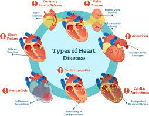
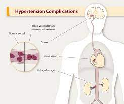

Several conditions can affect the cardiovascular system, including:
-
Coronary Artery Disease: It is caused by the buildup of plaque in the coronary arteries, leading to reduced blood flow to the heart.
-
Heart Failure: This condition occurs when the heart is unable to pump blood efficiently, often due to weakened heart muscle or other underlying conditions.
-
Arrhythmias: Arrhythmias are abnormal heart rhythms that can cause the heart to beat too fast, too slow, or irregularly.
-
Hypertension: High blood pressure can lead to increased strain on the heart and blood vessels, increasing the risk of heart disease and other complications.
-
Stroke: A stroke occurs when the blood supply to the brain is disrupted, often due to a blockage or rupture of a blood vessel.
 